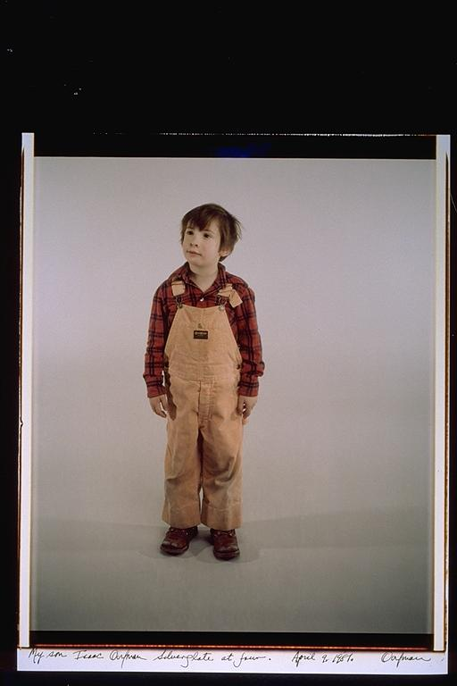

Aldo: I always liked this picture of Isaac because of the expression that he has on his face. I did not hang out with Isaac until years later, but we went to the same elementary school. I always thought he looked so needy in this picture, which reminds me how young he was.
Eugene: Isaac's First Picture -- Isaac looks very cute and innocent. That was probably the last time that he was innocent. I used to have to tie Isaac's shoes for him, because it took him a while to learn. I don't remember much about Isaac at this age except that we both think we remember meeting in the sandbox in kindergarden. When Isaac was in a little older like 2nd or 3rd grade he used to have the best toys -- two that come to rememberance are the Slay/Bike that we used to take to Tufts with Elsa, the Nixon Mask, and the Knight Armor (Ben Nugent used to be a great artist and he was also nervous, he would always rub his thighs).
Isaac: I want this one to be on display at my funeral. I know people will start bawling when they see it on my casket. I can't believe how adorable I was. I really have no memory of this time. That's a shame. I bet I heard "Oooohhh, you are soooo cute!" twenty times a day. That must have been great!
